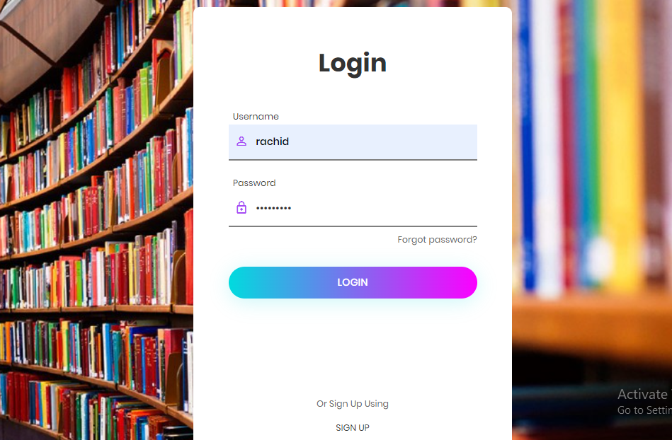
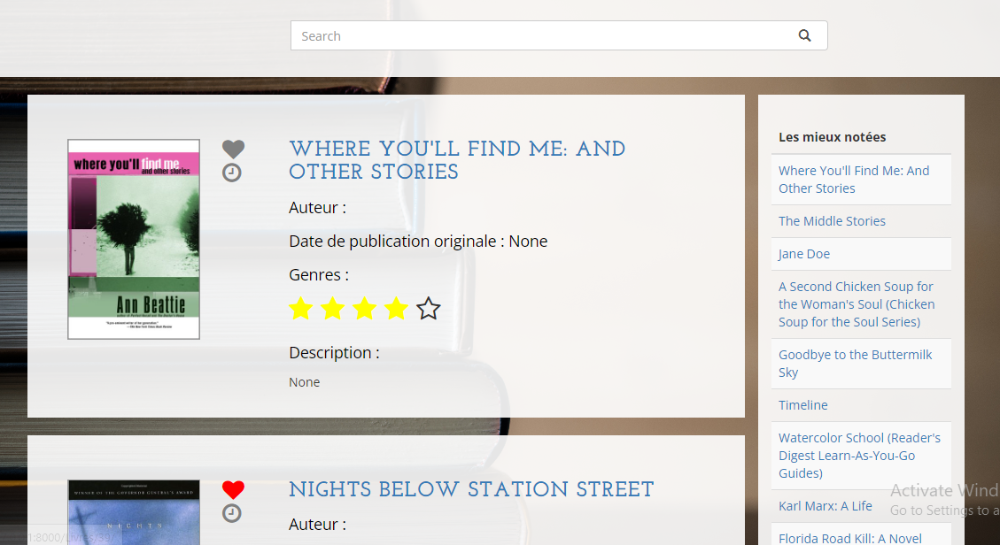
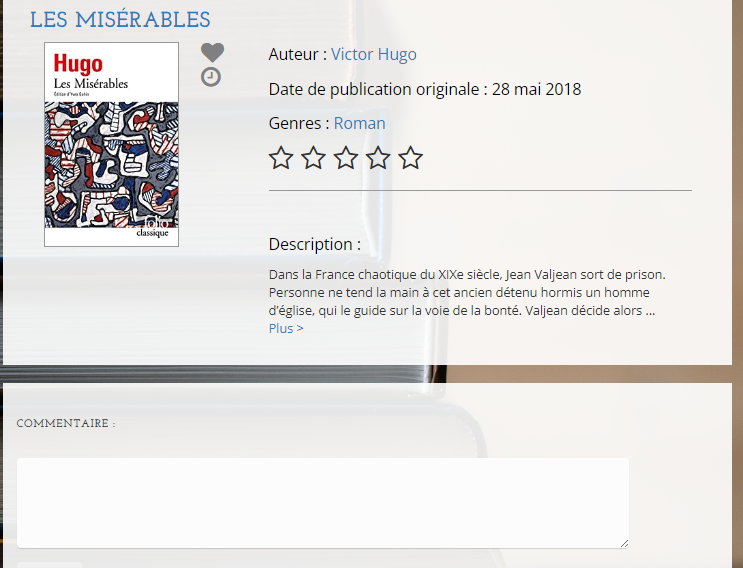
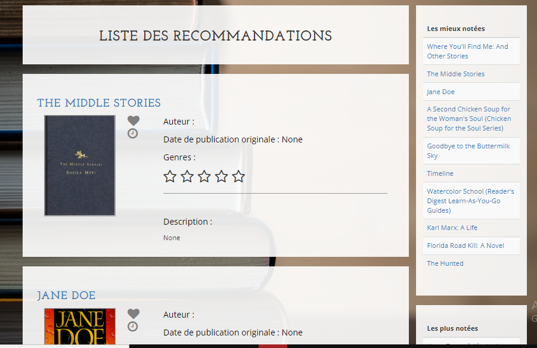

Réalisation d'un système de génération des profils chercheurs
Dans ce projet, nous avons eu l'occasion de réaliser un système de recommandation de livres, qui permet de fournir aux lecteurs des recommandations personnalisées et adaptées à leurs profils. Pour réaliser ce projet on a étudié plusieurs algorithmes de recommandation et on a finit par implémenter une approche basée le Filtrage Collaborative, qui est un algorithme qui effectue des recommandations, on mesurant la similarité entre les utilisateurs. Ce système emploi aussi une approche de filtrage démographique ou l'utilisateur est recommandé des livres a base de ces caractéristiques démographique (Sexe, Age, Pays etc...). Ensuite on a implémenter ce système dans le cadre d'un site web conçue avec le framework Django.
Compétences développés:
- Connaissances sur les algorithmes de recommandation (Filtrage collaborative, filtrage démographiques etc...).
- Conception d'une application web avec Django en utilisant le modèle MVC.
- Gestion de base de données relationnelles SQL.
- Modélisation de diagrammes UML tels que : diagramme de cas d'utilisation (Use Case), diagramme de classes, diagramme de séquence, diagramme d'état et diagramme d'activité.
Technologies:
- - Python
- - Django
- - Html
- - Css
- - Javascript
- - BootStrap
Page d'inscription

Liste des livres

Page de details d'un livre

Recommandations d'utilisateur
